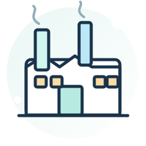
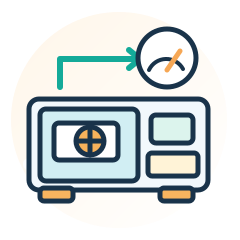
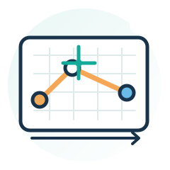
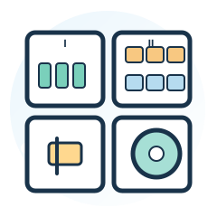
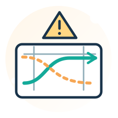
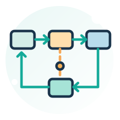
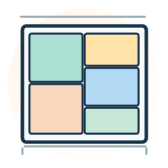
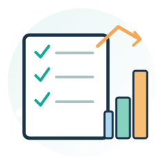
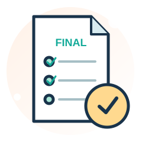

สัปดาห์ 01–03
รู้จักระบบผลิต
รู้จักโรงงาน → อ่านขั้นตอนผลิต → นับเครื่องจักร
Industrial Plant Design · Course Syllabus
จากพื้นฐานระบบผลิต สู่การวิเคราะห์ทำเล ออกแบบผัง ประเมินทางเลือก และนำเสนอผังโรงงานด้วยโปรแกรม — พร้อมกิจกรรม ใบงาน และแนวทางประเมินผลตลอดภาคเรียน
อธิบายหลักการออกแบบโรงงานและระบบสนับสนุน
ประเมินและเลือกผังจากทางเลือก
ใช้โปรแกรมสำเร็จรูปออกแบบผังจากสถานการณ์จำลอง
เรียนสัปดาห์ละ 3 ชั่วโมง รวม 51 ชั่วโมง โดยสัปดาห์ที่ 8 และ 17 เป็นสัปดาห์สอบ ไม่มีเนื้อหาใหม่
รู้จักโรงงาน → อ่านขั้นตอนผลิต → นับเครื่องจักร
เลือกทำเล → เลือกชนิดผัง → ตรวจปัญหาเดิม
วัดการไหล → จัดความสัมพันธ์ → ลงพื้นที่ → ประเมิน
เขียนผังดิจิทัล → ปรับปรุงกรณีศึกษา → นำเสนอ
| สัปดาห์ | หัวข้อหลัก | เนื้อหาแกนกลาง | ระดับ |
|---|---|---|---|
| 01 | รู้จักโรงงานและการออกแบบผัง | ความหมาย • วัตถุประสงค์ • องค์ประกอบ | พื้นฐาน |
| 02 | ผลิตภัณฑ์และลำดับกระบวนการผลิต | ผลิตภัณฑ์ • Routing • OPC | พื้นฐาน |
| 03 | กำลังการผลิตและจำนวนเครื่องจักรเบื้องต้น | กำลังการผลิต • จำนวนเครื่อง • พื้นที่ตั้งต้น | พื้นฐาน–ปานกลาง |
| 04 | ปัจจัยการเลือกทำเลที่ตั้งโรงงาน | ปัจจัยเลือกทำเล • Factor Rating | พื้นฐาน |
| 05 | คำนวณเปรียบเทียบทำเลอย่างง่าย | Load-Distance • Center of Gravity เบื้องต้น | พื้นฐาน–ปานกลาง |
| 06 | ชนิดของผังโรงงานและการเลือกใช้ | Product / Process / Fixed / Cellular Layout | พื้นฐาน |
| 07 | ปัญหาผังเดิมและสิ่งอำนวยความสะดวก | ปัญหาผังเดิม • พื้นที่สนับสนุน | พื้นฐาน–ปานกลาง |
| 08 | สอบกลางภาค | สอบกลางภาค (สัปดาห์ 1–7) | สอบ 3 ชม. |
| 09 | การวิเคราะห์การไหลของวัสดุ | Flow Diagram • From-To • Spaghetti | ปานกลาง |
| 10 | การวางผังอย่างเป็นระบบ ขั้นพื้นฐาน | SLP • ARC • Relationship Diagram | ปานกลาง |
| 11 | การกำหนดพื้นที่และผังโรงงานแบบบล็อก | พื้นที่ใช้งาน • Block Layout 2 ทางเลือก | ปานกลาง |
| 12 | ระบบขนถ่ายวัสดุและความปลอดภัย | Forklift • Conveyor • AGV/AMR • เส้นทางปลอดภัย | พื้นฐาน–ปานกลาง |
| 13 | ประเมินและตัดสินใจเลือกผังโรงงาน | ระยะทาง • ต้นทุน • คะแนนถ่วงน้ำหนัก | ปานกลาง |
| 14 | เขียนผังโรงงานด้วยโปรแกรมสำเร็จรูป | ผัง 2 มิติ • Excel • โปรแกรมสำเร็จรูป | พื้นฐาน–ปานกลาง |
| 15 | กรณีศึกษาออกแบบและปรับปรุงผังโรงงาน | ทำกรณีศึกษาผังโรงงาน CNC | ปานกลาง |
| 16 | นำเสนอโครงงานและสรุปความรู้ | นำเสนอผังเดิม–ใหม่และผลประเมิน | ปานกลาง |
| 17 | สอบปลายภาค | สอบปลายภาค (สัปดาห์ 9–16) | สอบ 3 ชม. |
คลิกหมายเลขสัปดาห์เพื่อไปยังหัวข้อเรียน และเลือก “ดูหัวข้อย่อย 6 ข้อ” เพื่ออ่านเนื้อหา กิจกรรม และใบงานตามแผนการสอน
สัปดาห์ที่ 1–3

Introduction to Industrial Plant Design
ความหมาย • วัตถุประสงค์ • องค์ประกอบ
ดูภาพโรงงาน 2 แบบแล้วระบุข้อดี–ปัญหาของผัง
ใบงาน: องค์ประกอบโรงงานและปัญหาที่สังเกตได้
เชื่อมต่อสัปดาห์ถัดไป: วางความเข้าใจภาพรวมก่อนศึกษากระบวนการผลิต
Product & Process Analysis
ผลิตภัณฑ์ • Routing • OPC
ใช้ชิ้นส่วน CNC 1 แบบ สร้างขั้นตอนการผลิต 5–7 ขั้น
ใบงาน: Routing และ OPC
เชื่อมต่อสัปดาห์ถัดไป: ใช้ข้อมูลขั้นตอนผลิตไปคำนวณทรัพยากรในสัปดาห์ที่ 3

Basic Capacity & Machine Requirement
กำลังการผลิต • จำนวนเครื่อง • พื้นที่ตั้งต้น
ตัวอย่าง 120 ชิ้น/วัน, 10 นาที/ชิ้น, 420 นาที/วัน → 3 เครื่อง
ใบงาน: ตารางเครื่องจักรและข้อมูลพื้นที่
เชื่อมต่อสัปดาห์ถัดไป: ทราบขนาด–กำลังผลิตก่อนตัดสินใจเรื่องทำเลและชนิดผัง
สัปดาห์ที่ 4–7
Facility Location: Qualitative Factors
ปัจจัยเลือกทำเล • Factor Rating
ให้คะแนนเปรียบเทียบทำเลโรงงาน 3 แห่งจากตารางข้อมูล
ใบงาน: ตาราง Factor Rating
เชื่อมต่อสัปดาห์ถัดไป: เพิ่มมิติการขนส่งเชิงตัวเลขในสัปดาห์ที่ 5

Simple Quantitative Location Analysis
Load-Distance • Center of Gravity เบื้องต้น
ทดลองคำนวณ Load-Distance ด้วยเครื่องคิดเลขหรือ Excel
ใบงาน: ตารางเลือกทำเลพร้อมเหตุผล
เชื่อมต่อสัปดาห์ถัดไป: เมื่อทราบทำเลแล้ว จึงเลือกแนวทางจัดเครื่องจักรในโรงงาน

Types of Plant Layout
Product / Process / Fixed / Cellular Layout
จับคู่ภาพโรงงาน 4 แบบกับชนิดผัง พร้อมอธิบายเหตุผล
ใบงาน: ตารางเปรียบเทียบผัง 4 ประเภท
เชื่อมต่อสัปดาห์ถัดไป: เริ่มมองหาข้อบกพร่องของผังจริงในสัปดาห์ที่ 7

Layout Problems & Supporting Facilities
ปัญหาผังเดิม • พื้นที่สนับสนุน
วงตำแหน่งปัญหา 5 จุดบนผังเดิม พร้อมเสนอแนวทางเบื้องต้น
ใบงาน: ผังปัญหา (Existing Layout)
เชื่อมต่อสัปดาห์ถัดไป: หลังสอบกลางภาคนำผังปัญหาไปวิเคราะห์การไหลอย่างเป็นระบบ
สัปดาห์ที่ 8
Midterm Examination
ประเมินความเข้าใจจากสัปดาห์ที่ 1–7 ด้วยคำถามและโจทย์คำนวณสั้น
ข้อสอบกลางภาค 3 ชั่วโมง
เชื่อมต่อสัปดาห์ถัดไป: ผ่านพื้นฐานก่อนเข้าสู่เครื่องมือออกแบบผังอย่างเป็นระบบ
สัปดาห์ที่ 9–13

Material Flow Analysis
Flow Diagram • From-To • Spaghetti
ทำ From-To Chart จากข้อมูลเที่ยวขนย้ายที่เตรียมไว้
ใบงาน: From-To Chart + Spaghetti Diagram
เชื่อมต่อสัปดาห์ถัดไป: ใช้ความถี่การขนย้ายเป็นข้อมูลสร้างความสัมพันธ์แผนก
Systematic Layout Planning (SLP)
SLP • ARC • Relationship Diagram
ทำ ARC จากแผนก CNC 6 แผนกและเหตุผลกำกับ
ใบงาน: ARC และ Relationship Diagram
เชื่อมต่อสัปดาห์ถัดไป: ใช้ความสัมพันธ์แผนกไปกำหนดพื้นที่และตำแหน่งจริง

Space Planning & Block Layout
พื้นที่ใช้งาน • Block Layout 2 ทางเลือก
จัดวางบล็อก 6 แผนกภายในอาคารสมมุติที่กำหนด
ใบงาน: Block Layout 2 ทางเลือก
เชื่อมต่อสัปดาห์ถัดไป: ตรวจสอบว่าอุปกรณ์ขนถ่ายใช้งานกับผังที่ออกแบบได้จริง
Material Handling Systems
Forklift • Conveyor • AGV/AMR • เส้นทางปลอดภัย
เลือกอุปกรณ์ให้ผังทางเลือก พร้อมคิดจำนวนเที่ยว/วันอย่างง่าย
ใบงาน: ตัวเลือกอุปกรณ์และการปรับผัง
เชื่อมต่อสัปดาห์ถัดไป: นำผังที่ปรับแล้วไปวัดผลและเลือกทางเลือก

Layout Evaluation & Decision Making
ระยะทาง • ต้นทุน • คะแนนถ่วงน้ำหนัก
เปรียบเทียบ Before–After จากชุดข้อมูลเดียวกัน
ใบงาน: ตารางประเมิน 2 ผังและเหตุผลการเลือก
เชื่อมต่อสัปดาห์ถัดไป: เตรียมผังที่ผ่านการตัดสินใจไปเขียนแบบในโปรแกรม
สัปดาห์ที่ 14–16
Computer-Aided Layout Design
ผัง 2 มิติ • Excel • โปรแกรมสำเร็จรูป
สร้างผัง Proposed Layout ฉบับดิจิทัลจากงานสัปดาห์ที่ 13
ชิ้นงาน: ผัง 2 มิติ + ตารางผลวิเคราะห์
เชื่อมต่อสัปดาห์ถัดไป: รวมไฟล์และหลักฐานเพื่อทำกรณีศึกษาฉบับสมบูรณ์
Integrated Plant Layout Case Study
ทำกรณีศึกษาผังโรงงาน CNC
ทำงานกลุ่มปรับปรุงผังและตรวจความถูกต้องของข้อมูลทั้งหมด
โครงงานกลุ่ม: รายงานกรณีศึกษา + ผังเดิม/ใหม่
เชื่อมต่อสัปดาห์ถัดไป: นำเสนอข้อสรุปและรับข้อเสนอแนะในสัปดาห์ถัดไป
Project Presentation & Course Synthesis
นำเสนอผังเดิม–ใหม่และผลประเมิน
นำเสนอโครงงานกลุ่มและประเมินเพื่อนด้วยเกณฑ์ที่กำหนด
ผลงานสรุป: รายงานและการนำเสนอ
เชื่อมต่อสัปดาห์ถัดไป: สรุปแนวคิดสำคัญเพื่อสอบปลายภาค
สัปดาห์ที่ 17

Final Examination
ประเมินเนื้อหาสัปดาห์ที่ 9–16 เน้นการประยุกต์ใช้ From-To, ARC, ผังทางเลือก และการประเมินผล
ข้อสอบปลายภาค 3 ชั่วโมง
เชื่อมต่อสัปดาห์ถัดไป: สิ้นสุดรายวิชา
ตัวอย่างการแบ่งเวลาเรียน 3 ชั่วโมงต่อสัปดาห์ตามเอกสารแผนการสอน
อธิบายหลักการด้วยภาพและงานผลิตใกล้ตัว
สาธิตโจทย์ / วิเคราะห์กรณีศึกษาแบบมีแนวทาง
ทำใบงานรายบุคคลหรือกลุ่มเล็ก
เฉลย สรุป และโยงไปสัปดาห์ถัดไป
เป็นรูปแบบการแบ่งเวลาภายในชั่วโมงทฤษฎี สามารถปรับช่วงเวลาสำหรับฝึกโปรแกรมและกรณีศึกษาในสัปดาห์ที่ 14–16 ได้
โรงงานผลิตชิ้นส่วน CNC ขนาดเล็ก (ข้อมูลจำลอง) ประกอบด้วย 6 พื้นที่ ได้แก่ คลังวัตถุดิบ, CNC Lathe, CNC Milling, Inspection, Packing และคลังสินค้าสำเร็จรูป โดยใช้ข้อมูลที่ผู้สอนจัดเตรียมให้
สัดส่วนต่อไปนี้เป็น “ตัวอย่างการวัดและประเมินผล (ข้อเสนอปรับใช้)” ตามแผนการสอนต้นฉบับ
แบบฝึกหัด / ใบงานระหว่างเรียน
สอบกลางภาค (สัปดาห์ที่ 8)
โครงงานกลุ่ม: ผังเดิม–ใหม่และเหตุผลการตัดสินใจ
สอบปลายภาค (สัปดาห์ที่ 17)
รวม 100% · แนวทางตรวจงานเน้นความเข้าใจ การคำนวณ การตัดสินใจ และการใช้โปรแกรมตามความเหมาะสมกับพื้นฐานผู้เรียน